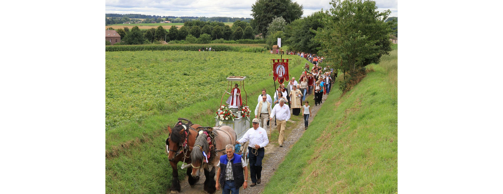
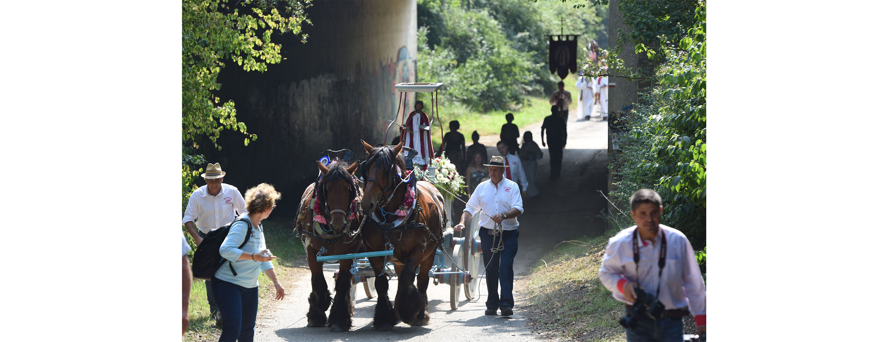
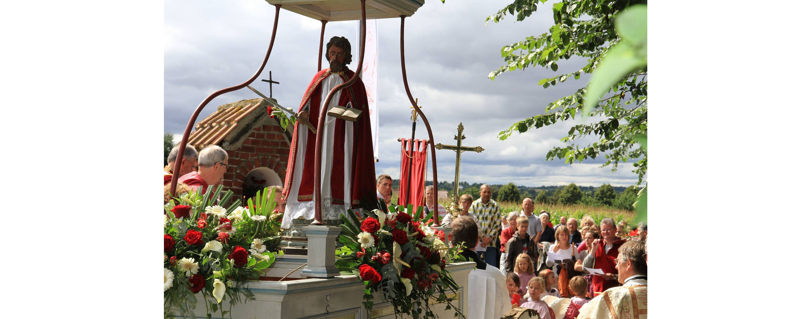
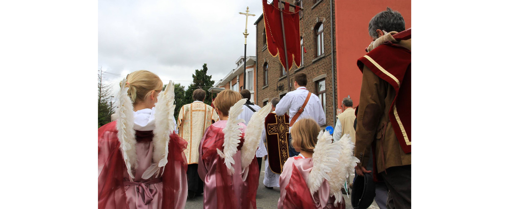
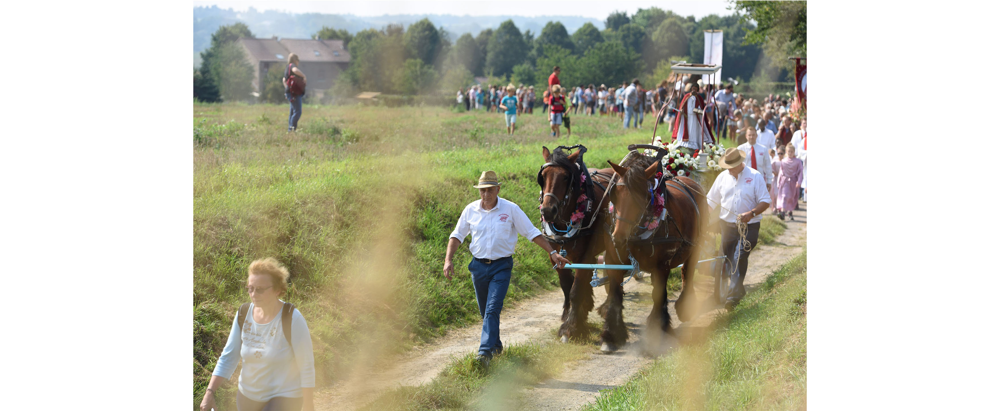
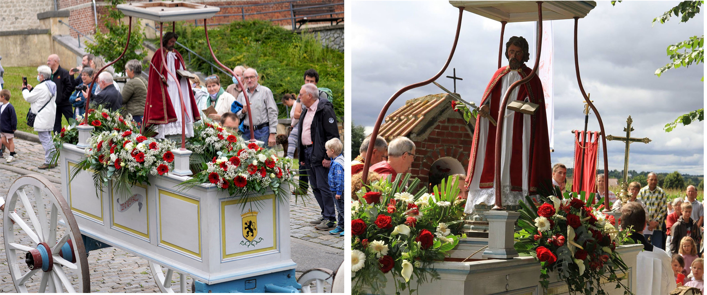

Accueil
Historique
Char
Circuit
Organisation
Programme
Galerie
Contact
La Grande Procession de
Bousval :





Précédent
Suivant
Le 326e
Tour de Saint-Barthelémy
se déroulera le
28 août 2022
A propos:
Comme chaque année, s'organise la procession nommée Le Tour de Saint-Barthélemy. Les habitants de Bousval ne veulent en aucun cas rater cette tradition. En cette année 2022, Le saint Barthélemy fête son 326e tour qui sera célébrer le dimanche qui suit le 24 août. cependant, l’origine de cette procession reste méconnue, serait-ce pour la protection des chevaux, des moissons..
En savoir plus..
Quelques représentations prisent lors d'anciennes processions :

En voir plus..